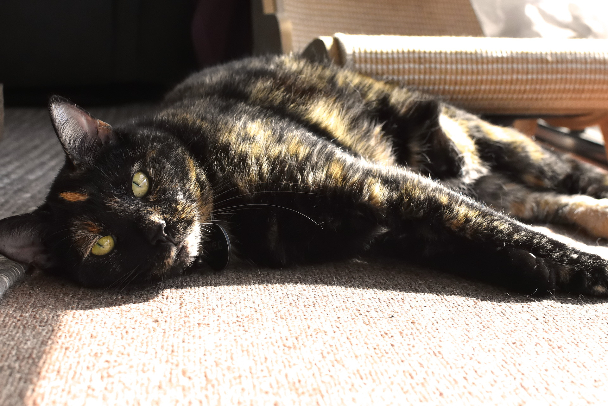
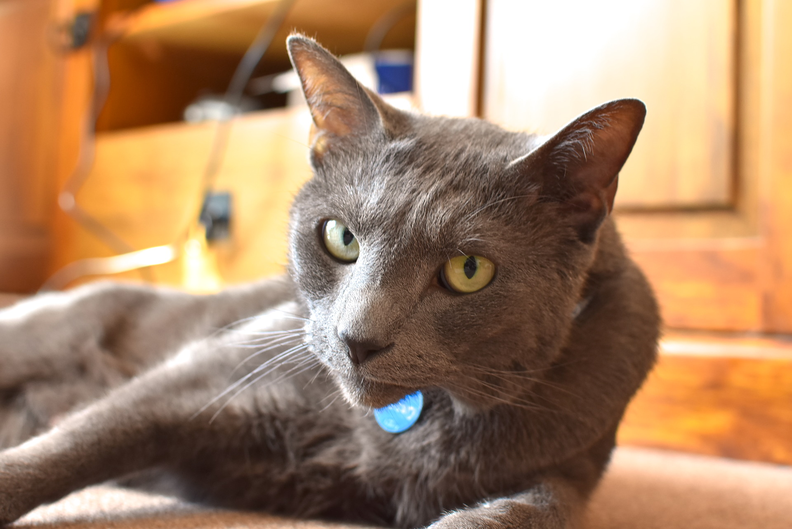
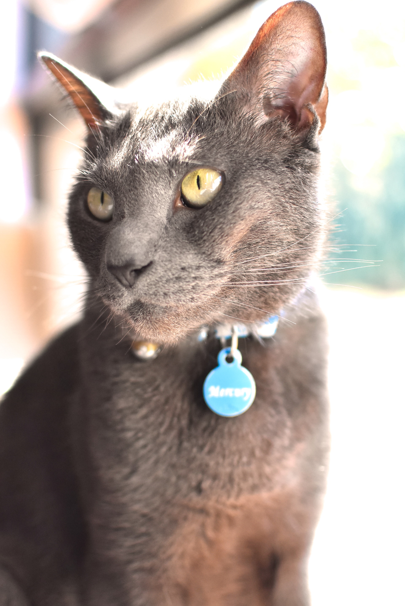
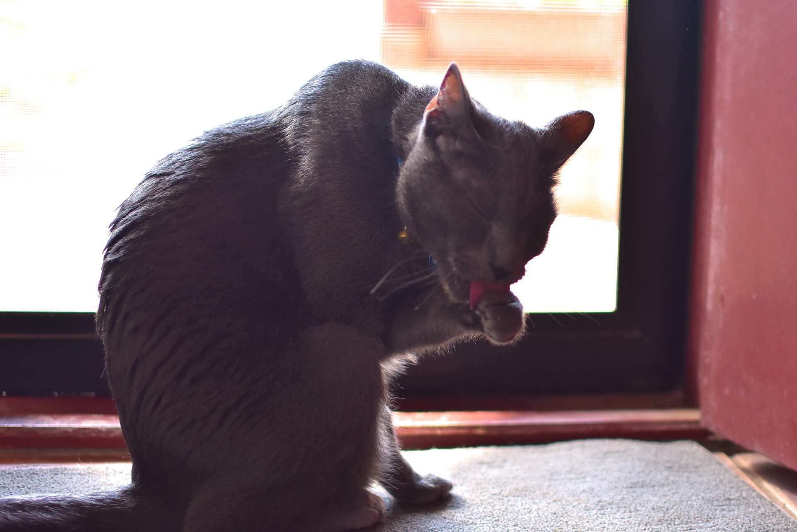
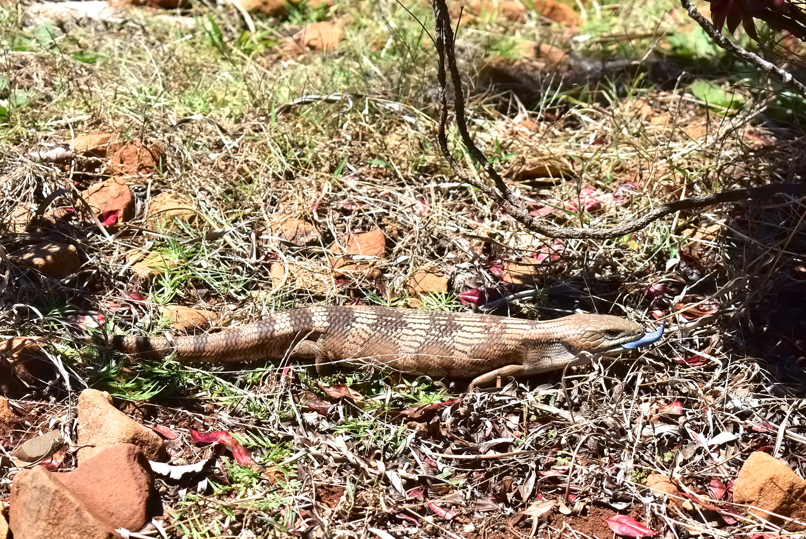
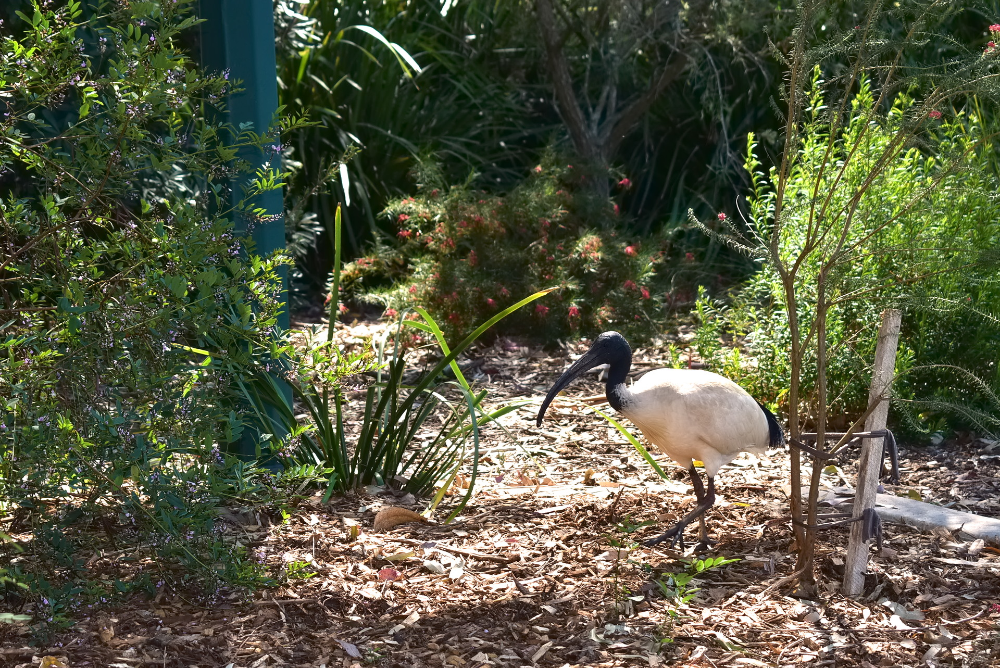
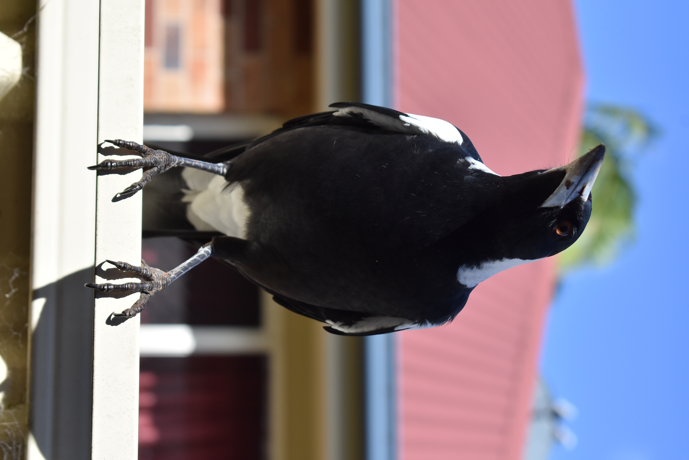
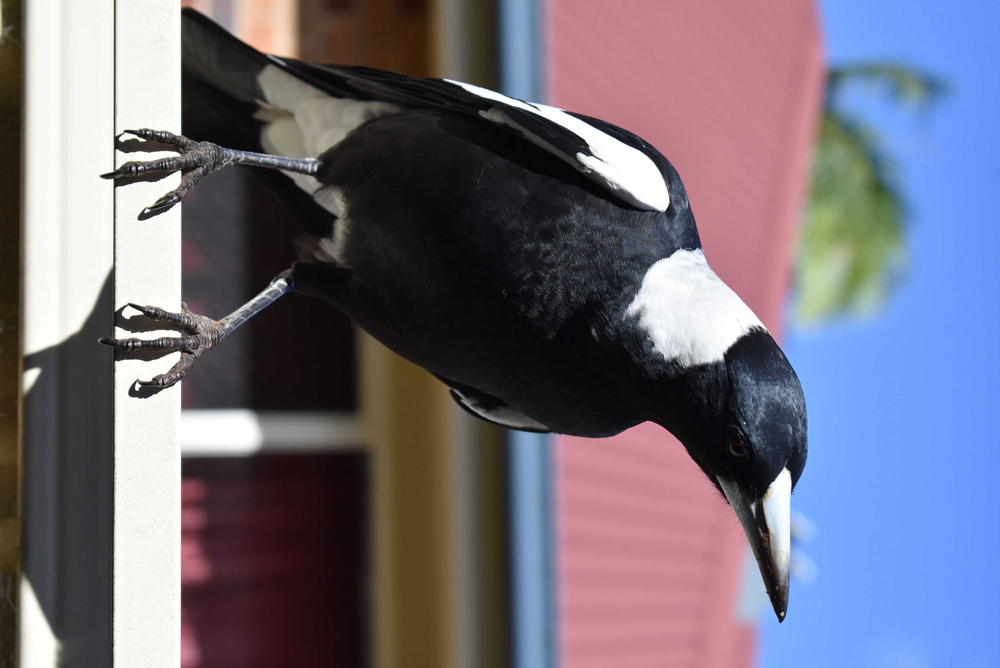

Photography
Albums
This page is where I'll post some of the photos I've taken. I might make a nice tidy gallery at some point, but for now, I'm just gonna slap some in here.
This is Mel! Like I said on my links page, she's a grumpy old lady and I adore her.

This was Mercury. He was a very good boy. Sadly, he passed away in 2025.



Here are some wildlife I've seen around my area.






Back to home